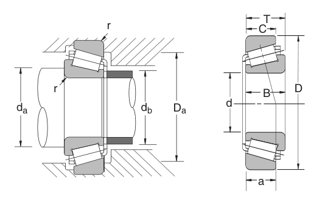

Original catalogue drawing - NSK catalogue, page 127

Scanned from the manufacturer catalogue page listing this part number. All part numbers printed on that table share the same drawing.
Scale cross-section
Blue = inner / outer ring, yellow = rolling element. Drawn to scale from this part's own
dimensions for selection reference only - not a manufacturing or assembly drawing.
Dimension table (mm / inch)
Symbol
Dimension
mm
inch
d
Bore diameter
95
3.7402
D
Outside diameter
200
7.874
B
Inner-ring / bearing width
45
1.7717
T
Overall assembly width
49.5
1.9488
C
Cup / outer-ring width
36
1.4173
Notes
Weights are given in kg. Load ratings are shown in both the original catalogue units and the converted value (1 N = 0.2248 lbf). Data is provided for selection reference only - confirm against the latest official catalogue before ordering.
Main dimensions
Bore d (mm)
95
Bore d (in)
3.7402
Outside dia. D (mm)
200
Outside dia. D (in)
7.8740
Width B (mm)
45
Width B (in)
1.7717
Overall width T (mm)
49.50
Overall width T (in)
1.9488
Cup width C (mm)
36
Cup width C (in)
1.4173
Load ratings & speeds
Basic dynamic load rating Cr (lbs)
78700
Basic static load rating Cor (lbs)
96700
Limiting speed - grease (rpm)
1,900
Limiting speed - oil (rpm)
2,600
Weight
Weight (kg)
6.804
Mounting dimensions (fillets / shoulders)
Chamfer r (in)
0.157
Shaft shoulder da min (in)
4.570
Housing shoulder Da max (in)
7.323
Shaft shoulder db max (in)
4.685
Bearing life (ISO 281 basic rating life)
C / P
Equivalent load P (N)
L10 (106 rev)
L10h at 600 rpm
4
87,519
102
2,822
6
58,346
392
10,903
8
43,759
1,024
28,444
10
35,008
2,154
59,845
15
23,338
8,323
231,207
Basic rating life per ISO 281: L10 = (C/P)10/3 with C = 350,075 N. Hours = L10 x 106 / (60n). Life-modification factors for lubrication, contamination and temperature (aISO) are not included.
Source & traceability
Brand
NSK
Source catalogue
NSK inch product catalogue
Catalogue page
p.129 (dimensions) / p.130 (ratings)
Dimensions in inches and millimetres, load ratings in lbs.
Send us the quantity you need and we will come back with price and
lead time, normally within 24 hours. Equivalent parts from other brands can be quoted at the same time.